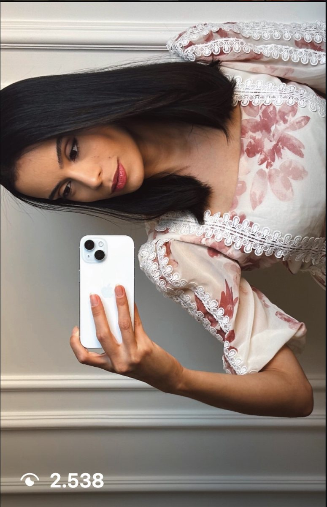

Resultado

Hellen Nara
@hellennara
estilo e moda
De 256 mil a 337,7 mil seguidores
256 mil → 337,7 mil seguidores
9,5 milhões de visualizações nos conteúdos
Já tinha audiência grande. Com o funil, fez o 1º vídeo de 1 milhão (1,48 mi), viralizou o 1º carrossel (100 mil em 24 h) e um react bateu 1,3 milhão, com 5.284 seguidores.
Antes e hoje

Os prints

